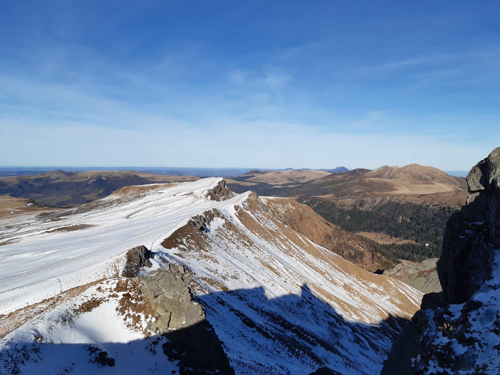

Description de l'itinéraire : Station du Mont-Dore - pied du téléski du Ferrand Nord - puy de Sancy - col de Courre
Distance : 7 km
Dénivelé positif : 600 m
Point le plus bas : 1324 m
Point le plus haut : 1884 m
Cotation en l'absence de neige : T2
Intérêt : 4/5
Date : ?
Photos : aucune
Le Capucin, le puy de Cliergue et la Tour carrée
Type : boucle
Description de l'itinéraire : salon du Capucin - le Capucin - puy de Cliergue - Tour carrée - val de Courre - chemin des Médecins
Distance : 11 km
Dénivelé positif : 700 m
Point le plus bas : 1208 m
Point le plus haut : 1738 m
Cotation en l'absence de neige : T2
Intérêt : 4/5
Date : 27/12/2023
Photos :
Le Sud des Monts Dore vu depuis le Capucin Le Nord des monts Dore et le puy de Dôme vus depuis le CapucinMont-Dore et le massif adventifLe val de Courre (amont)Le val de Courre (aval)
Les cascades
Type : boucle
Description de l'itinéraire : Mont-Dore - la grande Cascade - puy de la Tache - col de la croix Morand - cascade du Rossignolet - cascade du Queureuilh
Distance : 15 km
Dénivelé positif : 1000 m
Point le plus bas : 1005 m
Point le plus haut : 1740 m
Cotation en l'absence de neige : T2
Intérêt : 4/5
Date : ?
Photos : aucune
La vallée de Chaudefour
Type : boucle
Description de l'itinéraire : Chambon des Neiges - puy des Crebasses - col de la Cabane - puy de la Perdrix - puy de Champgourdeix
Distance : 14 km
Dénivelé positif : 1000 m
Point le plus bas : 1149 m
Point le plus haut : 1830 m
Cotation en l'absence de neige : T2
Intérêt : 4/5
Date : ?
Photos : aucune
Le plateau du Guéry
Type : boucle
Description de l'itinéraire : col de Guéry - cascade de Guéry - borne des Quatre seigneurs - col de St-Laurent - puy Gros
Distance : 13 km
Dénivelé positif : 600 m
Point le plus bas : 1247 m
Point le plus haut : 1485 m
Cotation en l'absence de neige : T1
Intérêt : 3/5
Date : ?
Photos : aucune
La banne d'Ordanche
Type : boucle
Description de l'itinéraire : parcours sportif de Murat-le-Quaire - la Banne d'Ordanche - le Tenon
Distance : 8 km
Dénivelé positif : 500 m
Point le plus bas : 1085 m
Point le plus haut : 1512 m
Cotation en l'absence de neige : T2
Intérêt : 3/5
Date : ?
Photos : aucune
GR4 du puy de Dôme au puy de Sancy
Type : aller simple
Description de l'itinéraire : parking du panoramique des Dômes - chemin des Gravouses - GR4 jusqu'au puy de Sancy
Distance : 53 km
Dénivelé positif : 2400 m
Point le plus bas : 800 m
Point le plus haut : 1885 m
Cotation en l'absence de neige : T2
Intérêt : 4/5
Date : du 13/7/2016 au 15/7/2016 avec nuits au château de Montlosier et au col de la croix Morand